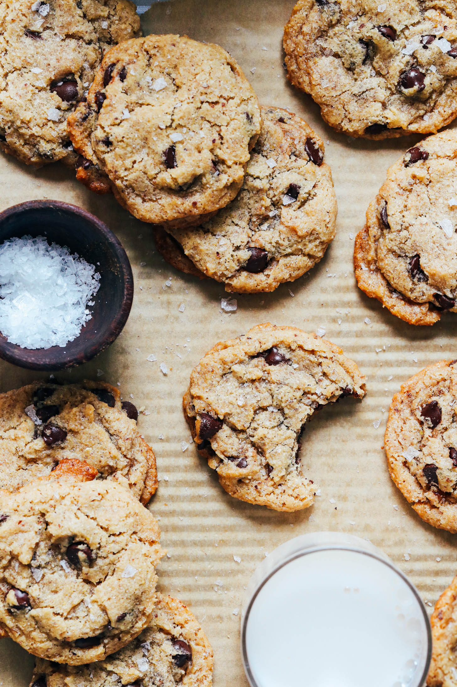

Chocolate Chip Cookies

Description
Classic chocolate chip cookies made vegan and gluten-free! Chewy on the inside with crisp buttery edges. Just 1 bowl and 8 ingredients required!
Ingredients
- 1 Tbsp Flaxseed Meal
- 2 1/2 Tbsp Water
- 3/4 C Brown Sugar
- 1/2 C Softened Vegan Butter
- 2 tsp Vanilla Extract
- 1 C Heaping, Gluten Free Flour
- 1 tsp Baking Powder
- 1 tsp Sea Salt
- 1 C Chocolate Chips
Instructions
- To a medium mixing bowl add flaxseed meal and water. Let the mixture gel for 5 minutes. Next add brown sugar and softened vegan butter. Beat with a hand mixer (or stand mixer) on medium-high for about 1 minute until creamed. Add vanilla and beat again for 20 seconds.
- Next add gluten-free flour, baking powder, and salt. Stir on low until just mixed. Finally, fold in the chocolate chips with a rubber spatula. Refrigerate the dough for 30 minutes.
- Meanwhile, preheat your oven to 350 degrees F (176 C) and line 2 baking sheets with parchment paper. When the dough is done chilling, use a cookie scoop to scoop out ~18 cookies, keeping them in mound shapes and spacing 2 inches apart (adjust amount of cookies if altering the default number of servings). Bake for 10-14 minutes — until edges are golden and centers are soft. Option to sprinkle with flaky salt for extra flavor!
- Let them rest on the baking sheet to cool for 5 minutes before transferring to a wire rack to fully cool (or you can eat them right away!). Store in an airtight container for 3-5 days or in the freezer for up to 1 month.